Στη σκιά μιας υπερβολής…#
![Το ξυλοχαρακτικό *Σφαρική επιφάνεια με ψάρια* του `Maurits Cornelis Escher <https://en.wikipedia.org/wiki/M._C._Escher>`__\ *.*](_static/images/uploads/2019/08/ezgif.com-crop2.gif,_static/images/uploads/2019/07/ezgif.com-gif-maker.gif,_static/images/uploads/2019/07/cea5cf80ceb5cf81ceb2cebfcebbceb9cebacf8ccf84ceb5cf81ceb5cf82-1.png,_static/images/uploads/2019/07/cea5cf80ceb5cf81ceb2cebfcebbceae_4-1.png,_static/images/uploads/2019/07/cea5cf80ceb5cf81ceb2cebfcebbceae_2-1.png,_static/images/uploads/2019/07/cea5cf80ceb5cf81ceb2cebfcebbceae_3-1.png,_static/images/uploads/2019/07/ce9bcebfceb3ceaccf81ceb9ceb8cebccebfcf82_1-11.png,_static/images/uploads/2019/08/ezgif.com-gif-maker-5-1.gif,_static/images/uploads/2019/07/cea5cf80ceb5cf81ceb2cebfcebbceae_5-1.png,_static/images/uploads/2019/07/cea5cf80ceb5cf81ceb2cebfcebbceae-1.png,_static/images/uploads/2019/07/cea5cf80ceb5cf81ceb2cebfcebbceae_3-1-1.png,_static/images/uploads/2019/08/ezgif-5-a9900beba2.pdf-1.png,_static/images/uploads/2019/08/ezgif-5-c61c2e89bf.pdf-1.png,_static/images/uploads/2019/08/lw427-mc-escher-sphere-surface-with-fish-1958.jpg,_static/images/uploads/2019/07/ezgif.com-gif-maker-2.gif,_static/images/uploads/2019/07/ezgif.com-gif-maker-3.gif,_static/images/uploads/2019/07/cea5cf80ceb5cf81ceb2cebfcebbceae-1-3.png,_static/images/uploads/2019/07/cea5cf80ceb5cf81ceb2cebfcebbceae_5-11.png,_static/images/uploads/2019/07/ce9bcebfceb3ceaccf81ceb9ceb8cebccebfcf82_1-1.png)
Το ξυλοχαρακτικό Σφαρική επιφάνεια με ψάρια του Maurits Cornelis Escher.#
Πρελούδιο#
«Είναι βαρύς ο ίσκιος της συκιάς», έλεγε ο συγχωρεμένος ο παππούς μου όποτε ήταν να κάτσουμε κάτω από κανένα δέντρο το μεσημέρι, για να ξεκουραστούμε. Αλλά αυτή η ανάρτηση δεν είναι για να καταθέσουμε τις παιδικές μας αναμνήσεις, αλλά για να ασχοληθούμε με ένα αρκετά ενδιαφέρον πρόβλημα που έχει να κάνει με τον «ίσκιο» μιας υπερβολής…
Ένα από τα προβλήματα - για την ακρίβεια, το τελευταίο - που βρίσκονται στις σημειώσεις των συναρτήσεων, είναι λίγο διαφορετικό από τα άλλα. Δεν έχει να κάνει με τη στενή θεματολογία των πανελληνίων και τις τυπικές ασκήσεις «κονσέρβα» που σερβίρουμε συνήθως στους μαθητές, αλλά έχει τις ρίζες του στην ιστορία των μαθηματικών και, ειδικότερα, του απειροστικού λογισμού. Ως εκ τούτου, συνήθως δεν είναι από τις ασκήσεις που θα μπουν σε προτεραιότητα για να λυθούν στα πλαίσια μιας σειράς μαθημάτων προετοιμασίας για τις πανελλήνιες εξετάσεις, αλλά, λίγο λόγω της ομορφιάς του, λίγο λόγω τύψεων, λίγο που το καλοκαίρι είναι μια περίοδος αποφόρτισης και ραστώνης, λίγο η νέα κυβέρνηση, λίγο το ένα, λίγο το άλλο, πάμε να δούμε το πρόβλημα.
Παίρνουμε τη συνάρτηση \(f(x)=\dfrac{1}{x}\) , \(x>0\) της οποίας η γραφική παράσταση είναι μια υπερβολή, όπως αυτή που φαίνεται παρακάτω:
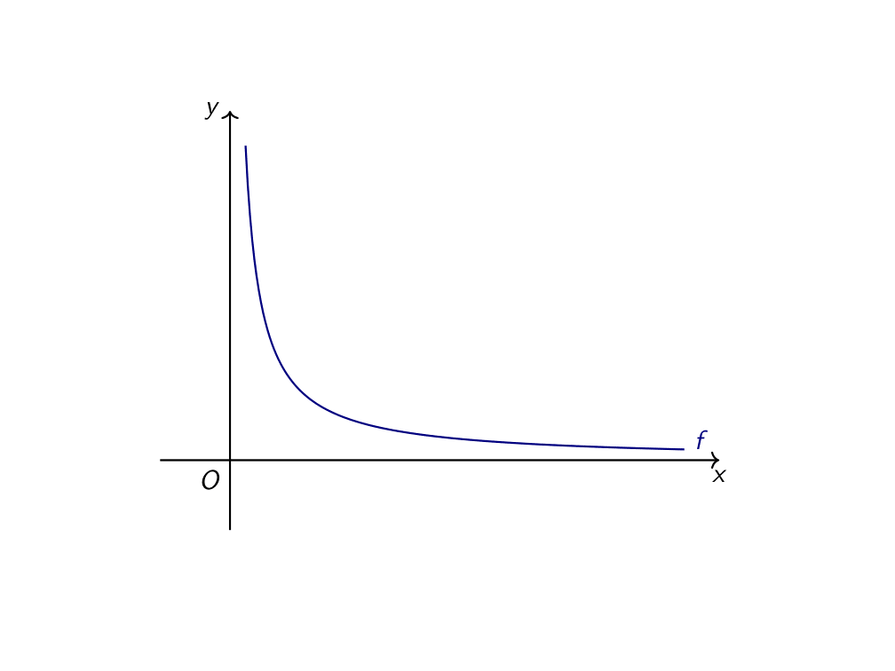
Η γραφική παράσταση της f.#
Ας επιλέξουμε τώρα δύο αυθαίρετα \(a,b>0\) με \(a<b\) και ας σχεδιάσουμε το χωρίο που βρίσκεται μεταξύ του άξονα \(xʹx\) , της γραφικής παράστασης \(C_f\) και των ευθειών \(x=a\) και \(x=b\) , όπως φαίνεται και στο παρακάτω σχήμα:
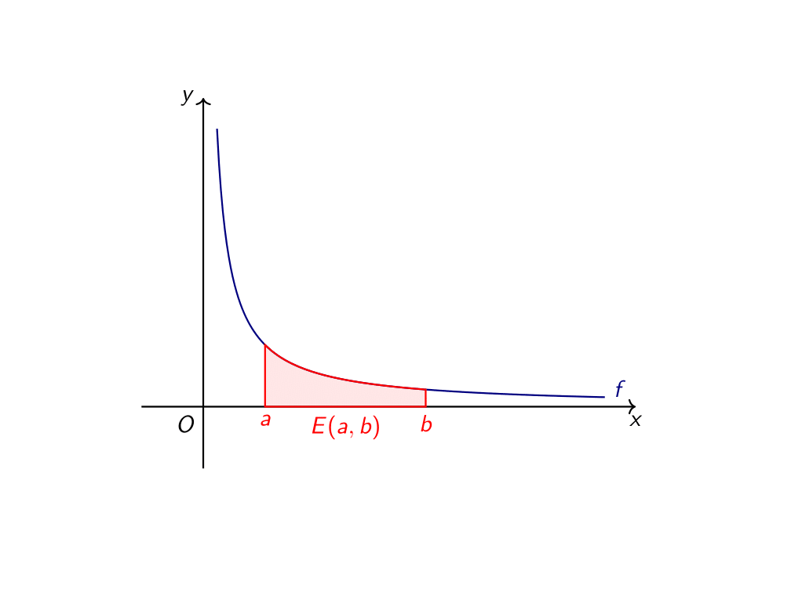
Το εμβαδόν του περιγραφόμενου χωρίου.#
Ας ονομάσουμε τώρα το εμβαδόν αυτό, για λόγους ευκολίας, \(E(a,b)\) . Πώς μπορούμε να υπολογίσουμε αυτό το εμβαδόν; Μεγάλη ιστορία. Ειλικρινά, πολύ μεγάλη ιστορία. Ωστόσο, μπορούμε, με έναν λίγο «χαλαρό» τρόπο, να εντοπίσουμε μία πολύ χρήσιμη ιδιότητα που σχετίζεται με αυτά τα εμβαδά που βρίσκονται κάτω από την υπερβολή \(y=\dfrac{1}{x}\) .
Υπερβολές τώρα…#
Ας πάρουμε δύο θετικούς αριθμούς \(a<b\) και ας θεωρήσουμε ένα ορθογώνιο όπως αυτό που φαίνεται στο παρακάτω σχήμα:
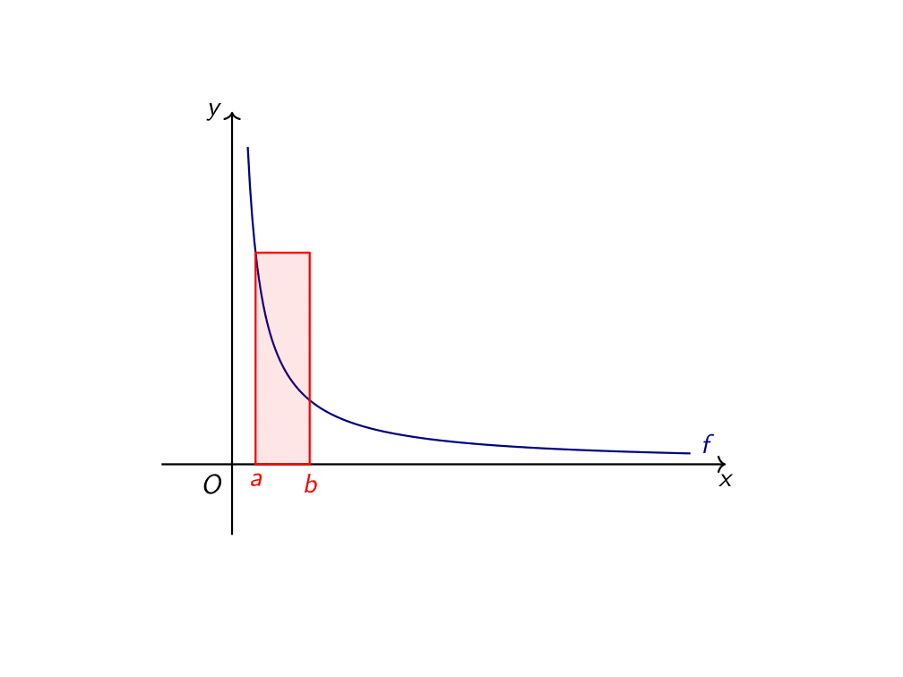
Ένα ορθογώνιο#
Πρακτικά, ξεκινάμε από το σημείο \(A(a,0)\) , ανεβαίνουμε μέχρι να συναντήσουμε τη γραφική παράσταση της \(f\) στο σημείο \(Aʹ(a,1/a)\) , προχωράμε δεξιά κατά \(b-a\) μέχρι το σημείο \(Bʹ(b,1/a)\) , κατεβαίνουμε μέχρι το σημείο \(B(b,0)\) και, τέλος, επιστρέφουμε στο \(A(a,0)\) . Εύκολα βρίσκουμε ότι το εμβαδόν αυτού του ορθογωνίου είναι ίσο με:
Ας πάμε τώρα στο ίδιο σχήμα και ας σχεδιάσουμε και το αντίστοιχο ορθογώνιο που προκύπτει από τα σημεία \(A(4a,0)\) και \(B(4b,0)\) . Όπως βλέπουμε και στο παρακάτω σχήμα, το εμβαδόν και αυτού του ορθογωνίου θα δίνεται από τον τύπο:
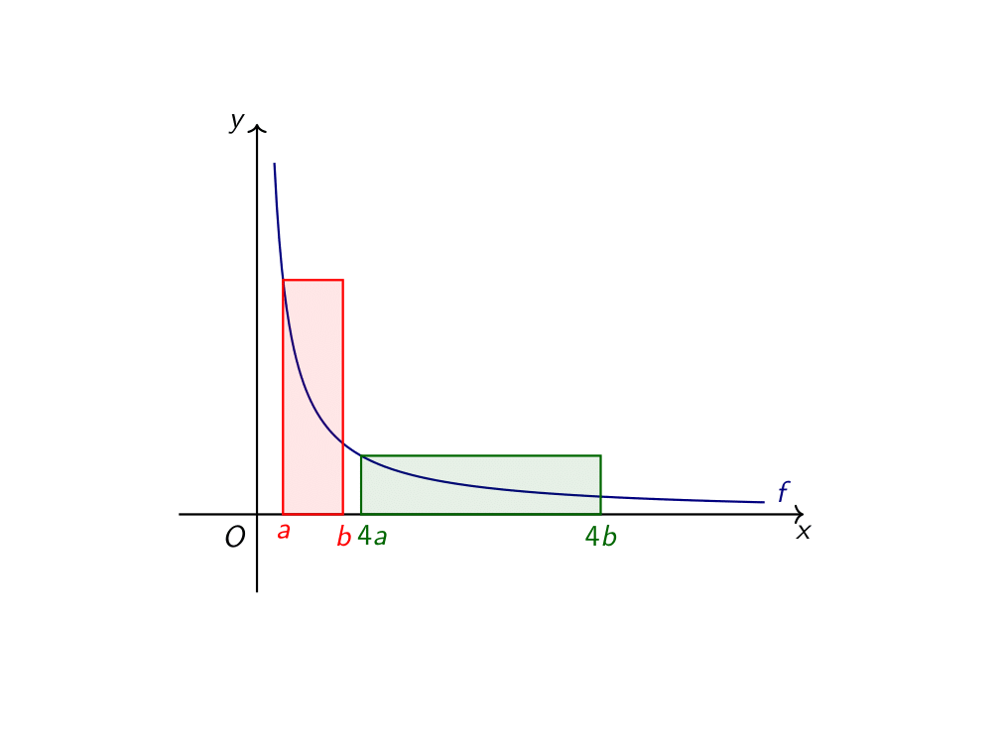
Δύο ορθογώνια, ένα εμβαδόν, μία ιστορία αγάπης.#
Παρατηρούμε ότι τα δύο ορθογώνια έχουν ίσα εμβαδά, πράγμα που, άμα το καλοσκεφτούμε, δεν είναι, δα, και τόσο παράλογο (μη σας πω ότι μοιάζει και με την ελληνική πολιτική σκηνή). Εξηγούμαι - διότι, αν δεν ερμηνεύσω εγώ τα λεγόμενά μου, θα την πατήσω όπως τόσοι άλλοι στην ιστορία. Για να πάμε από το κόκκινο στο πράσινο ορθογώνιο, από τη μία, τετραπλασιάσαμε τη βάση του (πάνω-κάτω, αυτό που θέλει να κάνει ο ΣΥΡΙΖΑ), από την άλλη, υποτετραπλασιάσαμε το ύψος του (πάνω-κάτω, αυτό που έχει πάθει το ΠΑΣΟΚ). Έτσι, «μία η άλλη», που θα λέγαμε· όσα δώσαμε στη μία πλευρά τα πήραμε από την άλλη (πάνω-κάτω, ό,τι έκαναν οι ψηφοφόροι στις πρόσφατες εκλογές με τα δύο «μεγάλα παιδιά»).
Κλείνουμε αυτήν την πολιτική παρένθεση για να δούμε το ζήτημα λίγο πιο γενικά. Αν πάρουμε ένα \(t>0\) και θεωρήσουμε τα σημεία \(A_t(ta,0)\) και \(B_t(tb,0)\) , τότε θα έχουμε \(t-\) πλασιάσει τις συντεταγμένες μας, επομένως θα έχουμε κάτι σαν αυτό που φαίνεται στο παρακάτω σχήμα:
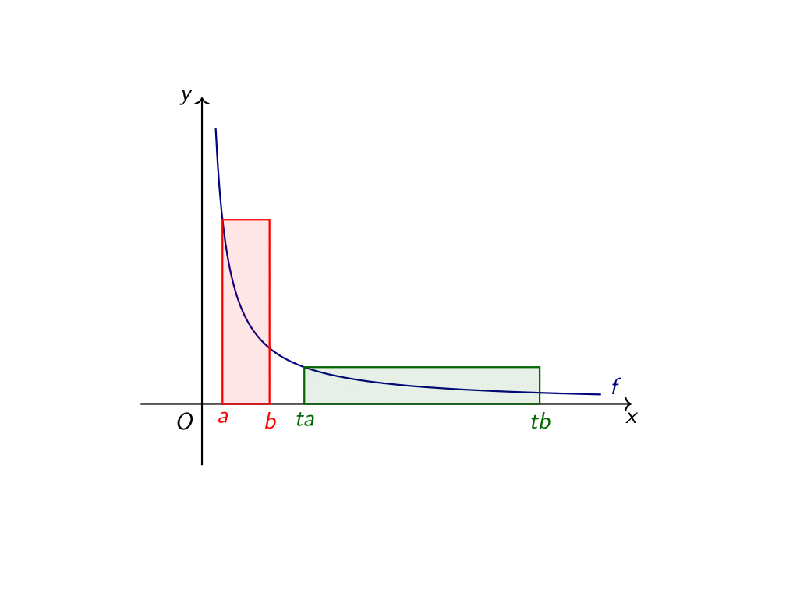
Το «t-πλάσιο» του αρχικού ορθογωνίου.#
Αν υπολογίσουμε το εμβαδόν και αυτού του ορθογωνίου θα βρούμε:
Επομένως, όσο κι αν «ζουλάμε» το ορθογώνιο αυτό, δεδομένου ότι η πάνω αριστερή του γωνία βρίσκεται πάντα πάνω στην υπερβολή μας, το εμβαδόν του δεν αλλάζει. Αυτό μπορείτε να το διαπιστώσετε εμπειρικά και από την παρακάτω εικόνα.

Αν μία εικόνα είναι 1.000 λέξεις, ένα GIF πόσες είναι;#
Τώρα που πειστήκαμε για το παραπάνω, ας δούμε πώς θα το χρησιμοποιήσουμε για να υπολογίσουμε κάποια υπερβολικά εμβαδά. Ψέματα! Δε θα τα υπολογίσουμε, αλλά θα βρούμε μια σχέση ανάμεσά τους, που θα μας βοηθήσει αρκετά. Ας πάρουμε, ξανά, δύο θετικούς αριθμούς \(a<b\) και τα σημεία \(A(a,0)\) και \(B(b,0)\) . Ας πάρουμε, επίσης έναν \(t>0\) και τα αντίστοιχα \(t-\) πλάσια σημεία \(Aʹ(ta,0)\) και \(Bʹ(tb,0)\) . Αντί για τα προηγουμένως αξιολάτρευτα ορθογώνια, θα θεωρήσουμε δύο πιο «στρυφνά» χωρία: το πρώτο (το κόκκινο) θα είναι αυτό που περικλείεται από τον άξονα \(xʹx\) , τη γραφική παράσταση της \(f\) και τις ευθείες \(x=a\) και \(x=b\) και το άλλο (το πράσινο) αυτό που περικλείεται από τον άξονα \(xʹx\) , τη γραφική παράσταση της \(f\) και τις ευθείες \(x=ta\) και \(x=tb\) . Τα παραπάνω χωρία φαίνονται και στο ακόλουθο σχήμα:
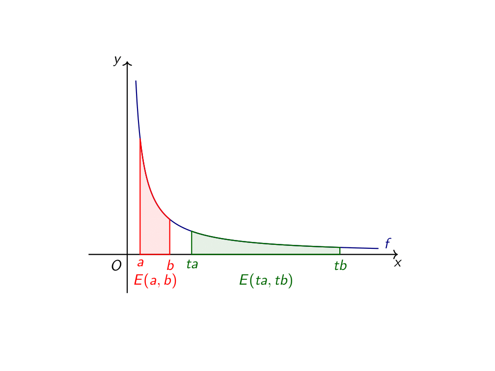
Τα δύο χωρία που μας απασχολούν.#
Όπως βλέπετε, τα εμβαδά τους τα «ξέρουμε»: το μεν κόκκινο χωρίο έχει εμβαδό ίσο με \(E(a,b)\) , το δε πράσινο ίσο με \(E(ta,tb)\) . Τι σχέση έχουν, όμως, αυτά τα δύο εμβαδά; Για να απαντήσουμε σε αυτήν μας της απορία, ας προσπαθήσουμε να τα «εκτιμήσουμε» μέσα από άλλα, γνωστά σε εμάς, εμβαδά. Ως πρώτη εκτίμηση, θα φερθούμε αρκετά «χοντροκομμένα» και θα πούμε ότι τα δύο χωρία είναι ίσα με τα αντίστοιχα ορθογώνια που μελετούσαμε τόσην ώρα. Δηλαδή, λέμε ότι το προηγούμενο σχήμα είναι το ίδιο ακριβώς με ακόλουθο, σε ό,τι έχει να κάνει με τα χρωματιστά εμβαδά:
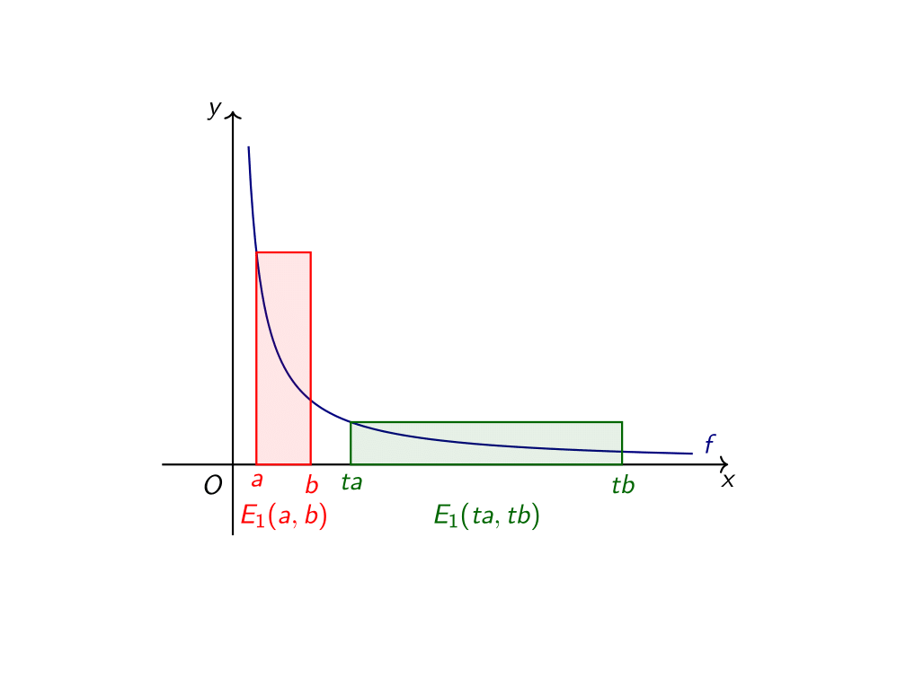
Η πρώτη εκτίμηση των εμβαδών.#
Προφανώς, αυτή η εκτίμηση είναι εσφαλμένη. Για να ακριβολογούμε, είναι τόσο εσφαλμένη όσο το να πούμε ότι τα αρχικά μας χωρία είναι ορθογώνια (μεγάλη σοφία ξεστομίστηκε τώρα). Αλλά, τα μεγαλύτερα ταξίδια έχουν ξεκινήσει από μία λάθος εκτίμηση (π.χ. ο Κολόμβος αγνοούσε δύο ηπείρους, θα κολλήσουμε σε κάτι τετραγωνικά εμείς;). Άλλωστε, αυτό είναι και το σκεπτικό πίσω από την εκτίμηση: δεν υπολογίζουμε ακριβώς αυτό που θέλουμε, αλλά, έπειτα από κάποιες εκτιμήσεις, έχουμε φτάσει (ή εκτιμούμε ότι έχουμε φτάσει - no pun intended) κοντά σε αυτό που θέλουμε. Με αυτό το σκεπτικό, ποια θα μπορούσε να ήταν η δεύτερή μας εκτίμηση;
(Σκέψη)
Αχά! Θα χωρίσουμε τα δύο διαστήματα που έχουμε στη μέση - δηλαδή, σε δύο ίσα τμήματα - και θα σχεδιάσουμε για κάθε ένα χωρίο από δύο ορθογώνια, όπως φαίνεται στο παρακάτω σχήμα:
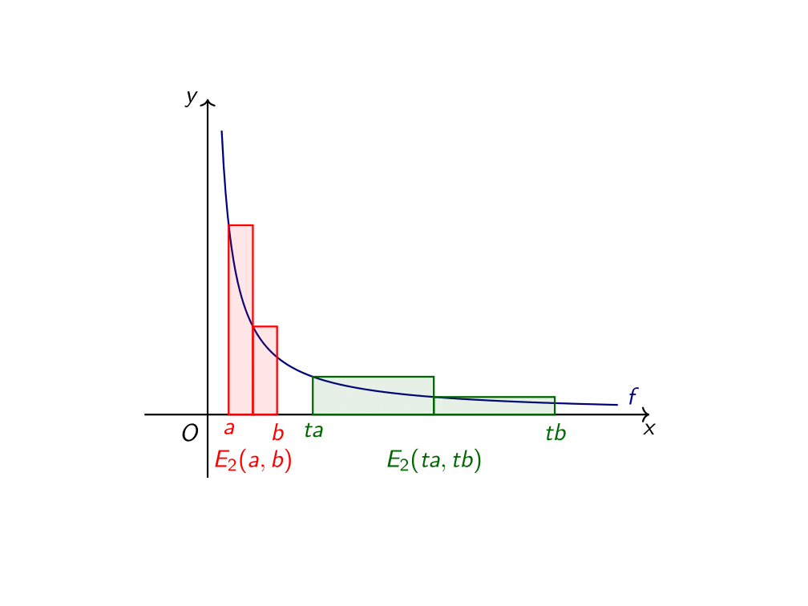
Η δεύτερη εκτίμηση των εμβαδών.#
Αυτή η εκτίμηση είναι καλύτερη, αλλά, και πάλι, θέλουμε αρκετό δρόμο μέχρι να φτάσουμε σε κάτι κοντινό. Αν συνεχίσουμε έτσι, κόβοντας το κάθε διάστημα σε τρία υποδιαστήματα, έπειτα σε τέσσερα, έπειτα σε πέντε κ.ο.κ., θα αρχίσουμε να «αγκαλιάζουμε» την καμπύλη όλο και καλύτερα, όπως φαίνεται στο ακόλουθο σχήμα:
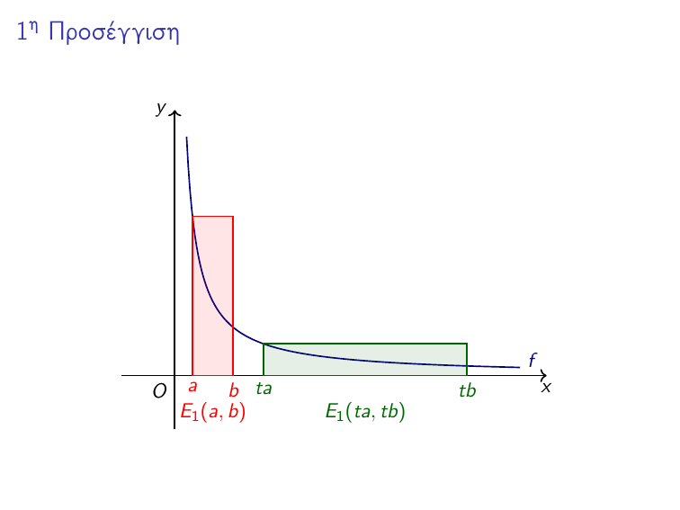
Οι πρώτες 20 προσεγγίσεις.#
Ας παρατηρήσουμε τώρα και μία ενδιαφέρουσα ιδιότητα αυτών των προσεγγίσεων: το κόκκινο εμβαδόν είναι πάντα ίσο με το πράσινο! Σε ό,τι αφορά την πρώτη προσέγγιση, αυτό προκύπτει από όσα αναλύσαμε προηγουμένως. Ας δούμε όμως πώς αυτό ισχύει και σε οποιαδήποτε άλλη προσέγγιση, παίρνοντας για παράδειγμα τη δεύτερη προσέγγιση:
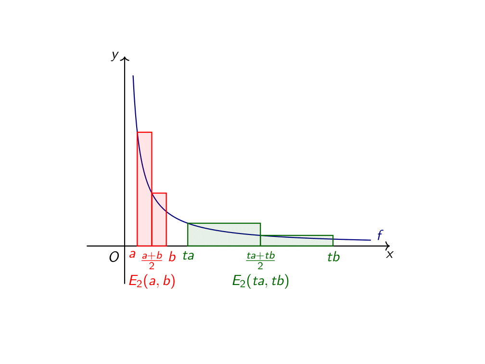
Η δεύτερη εκτίμηση.#
Ας δούμε το αριστερό κόκκινο ορθογώνιο, το οποίο καθορίζεται από τα σημεία \(A(a,0)\) και \(C\left(\frac{a+b}{2},0\right)\) και ας το συγκρίνουμε με το αριστερό πράσινο ορθογώνιο, το οποίο καθορίζεται πλήρως από τα σημεία \(Aʹ(ta,0)\) και \(Cʹ\left(\frac{ta+tb}{2},0\right)\) . Όπως βλέπουμε, το πράσινο είναι το « \(t-\) πλάσιο» του κόκκινου και, ως εκ τούτου, έχουν ίσα εμβαδά. Ανάλογα, και το δεξί κόκκινο ορθογώνιο έχει ίσο εμβαδό με το δεξί πράσινο ορθογώνιο. Επομένως, προσθέτοντας τα δύο ίσα εμβαδά που έχουμε, έχουμε ότι:
Με το ίδιο σκεπτικό, σε κάθε εκτίμηση, το πρώτο κόκκινο ορθογώνιο έχει το ίδιο εμβαδόν με το πράσινο, το δεύτερο κόκκινο με το δεύτερο πράσινο, το τρίτο κόκκινο με το τρίτο πράσινο κ.ο.κ.. Στο παρακάτω σχήμα μπορείτε να δείτε τις 20 πρώτες προσεγγίσεις, αλλά χρωματισμένες με διαφορετικό τρόπο: τα ορθογώνια που έχουν ίδιο χρώμα έχουν και ίσα εμβαδά.
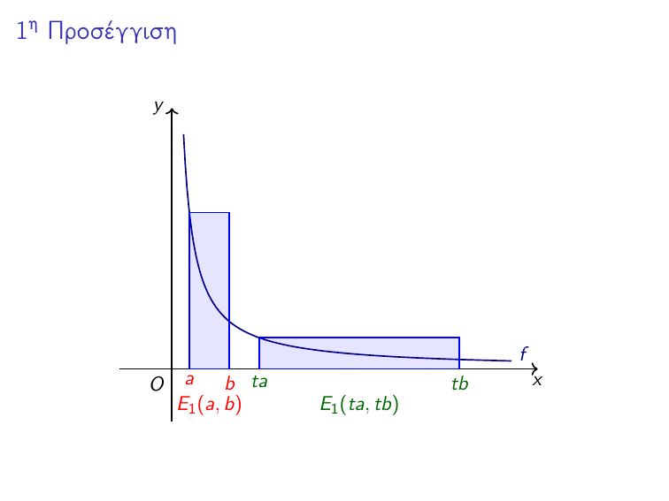
Χρώματα! Πολλά χρώματα!#
Ως τώρα έχουμε πειστεί, μάλλον, για το γεγονός ότι όσες προσεγγίσεις κάνουμε για τα δύο εμβαδά είναι ίσες μεταξύ τους, δηλαδή, ότι, για την \(\nu-\) οστή προσέγγιση των δύο εμβαδών ισχύει ότι:
Καθώς όμως κάνουμε όλο και καλύτερες προσεγγίσεις, όπως είδαμε παραπάνω, προσεγγίζουμε όλο και περισσότερο τις τιμές των \(E(a,b)\) και \(E(ta,tb)\) . Έτσι, αφού όλες οι προσεγγίσεις μας είναι ίσες, αναμένουμε και αυτά που προσεγγίζουμε να είναι ίσα μεταξύ τους, οπότε και συμπεραίνουμε ότι:
Δηλαδή, για τα δύο αρχικά μας χωρία, το κόκκινο και το πράσινο, ισχύει η ίδια ιδιότητα με αυτήν που ισχύει για τα αντίστοιχα ορθογώνια:
{kind=link}
Μπαίνοντας στους λογαρίθμους από το… παράθυρο.#
Ας περάσουμε τώρα και στο «ζουμί». Θεωρούμε την ίδια υπερβολή, \(y=\dfrac{1}{x}\) και κατασκευάζουμε την εξής συνάρτηση \(L:(0,+\infty)\to\mathbb{R}\) :
Τι κάνει, πρακτικά, αυτή η συνάρτηση; Όσο είμαστε δεξιά από το 1, μας δίνει το εμβαδόν κάτω από την υπερβολή \(y=\dfrac{1}{x}\) από το 1 έως το \(x\) , ενώ όσο είμαστε αριστερά από το 1, μας δίνει και πάλι το εμβαδόν, απλά με ένα «πλην» μπροστά (θα καταλάβετε στην πορεία την χρησιμότητα αυτού του «πλην»). Έτσι, για παράδειγμα, το \(L(5)\) είναι ίσο με το εμβαδόν \(E(1,5)\) (ακόμα δεν ξέρουμε την ακριβή τιμή του, αλλά δεν πειράζει), το \(L(1/2)\) είναι το «αρνητικό εμβαδόν» \(-E(1/2,1)\) κ.λπ.. Το μόνο \(x\) για το οποίο γνωρίζουμε ακριβώς την τιμή της \(L\) είναι το 1, αφού \(L(1)=E(1,1)=0\) .
Αν και δεν ξέρουμε πολλά ακόμα για την \(L\) , μπορούμε να βρούμε κάποιες πολύ ωραίες ιδιότητές της. Για παράδειγμα, ας πάρουμε δύο θετικούς αριθμούς \(x,y\) . Θα δείξουμε ότι ισχύει η ακόλουθη σχέση:
Πριν προχωρήσουμε στην απόδειξη, ας δούμε λίγο τι μας λέει η παραπάνω σχέση. Μεταφράζοντάς την σε εμβαδά, βλέπουμε ότι αυτό σημαίνει το εξής (υποθέτουμε, σιωπηλά, ότι \(x,y>1\) , για να μην ψάχνουμε αρνητικά εμβαδά στο σχήμα μας):
το οποίο απεικονίζεται και στο παρακάτω σχήμα:
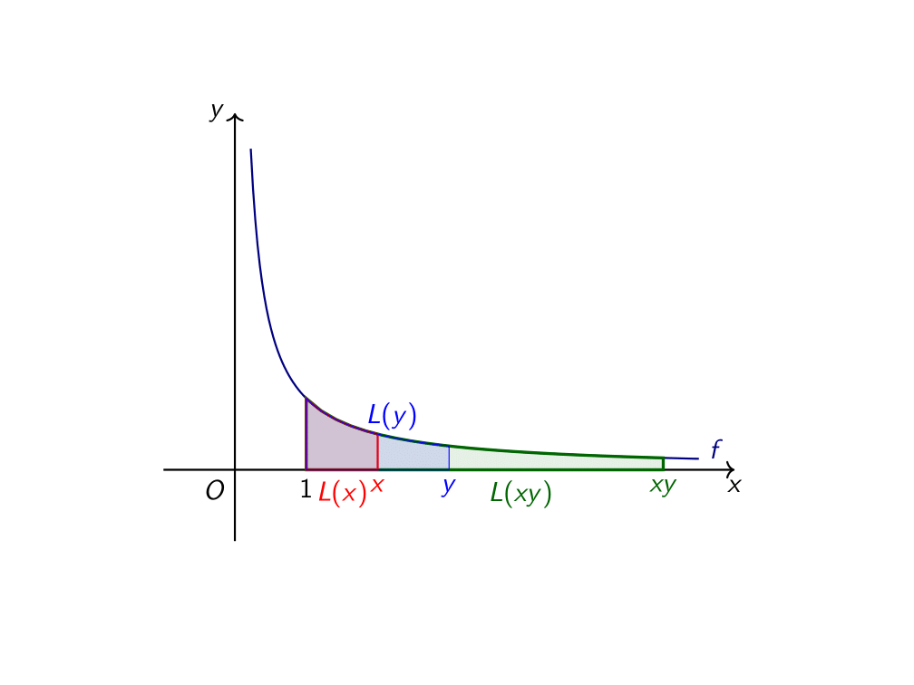
Τα τρία χωρία.#
Αυτό που λέει η ζητούμενη σχέση είναι ότι «μπλε + κόκκινο = πράσινο». Έλα, όμως, που στο σχήμα δε φαίνεται! Ή, ίσως και να φαίνεται… Αν πάρουμε το κόκκινο χωρίο και το αφήσουμε να «τσουλήσει», προς τα δεξιά μέχρι να βρει το \(xy\) (aka πολλαπλασιάσουμε με \(y\) ), θα πάρουμε το \(y-\) πλάσιό του. Με τον συμβολισμό που έχουμε υιοθετήσει, δεν κάνουμε τίποτα άλλα πέρα από το να εκμεταλλευτούμε τη σχέση:
Τότε, έχουμε το ακόλουθο σχήμα:
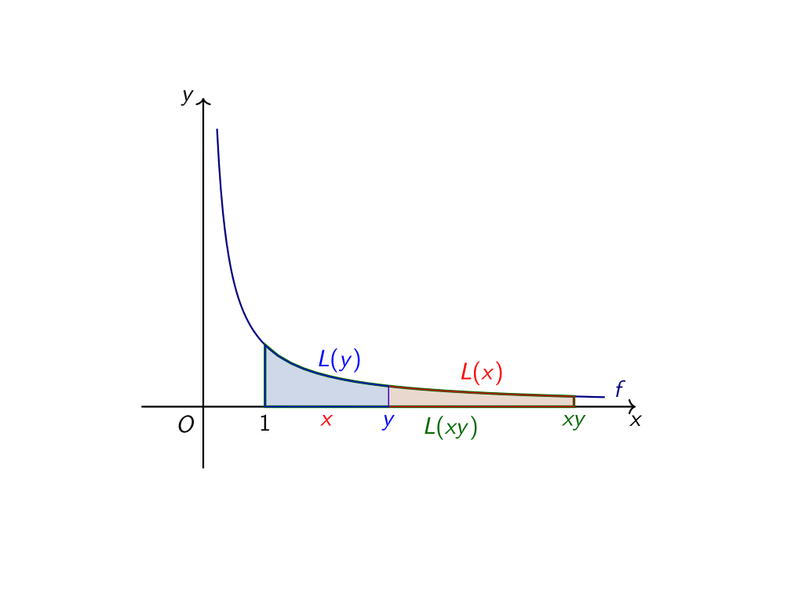
Κύλησε ο τέντζερης και βρήκε το καπάκι.#
Εδώ, η ζητούμενη σχέση είναι πλέον εμφανέστατη.
Ας περάσουμε, τώρα, και στην τυπική απόδειξη του ζητούμενου. Αρχικά, υποθέτουμε ότι \(x\leq y\) - άλλωστε, κάποιος από τους δύο αριθμούς θα είναι μικρότερος - και διακρίνουμε τις εξής περιπτώσεις:
Αν \(1\leq x\leq y\) , τότε έπεται ότι \(xy\geq1\) , οπότε έχουμε:
Αν \(0<x\leq y\leq1\) , τότε έπεται ότι \(xy\leq1\) , οπότε έχουμε:
Αν \(0<x\leq1\leq y\) , τότε παρατηρούμε ότι, αφού \(0<x\leq1\) , έπεται ότι \(xy\leq y\) . Επομένως, έχουμε:
Αν, τώρα, \(xy\geq1\) , τότε \(E(1,y)-E(xy,y)=E(1,xy)=L(xy)\) , ενώ αν \(xy<1\) τότε:
Έτσι, αποδείξαμε σε κάθε περίπτωση τη ζητούμενη σχέχη.
Μια άλλη χρήσιμη σχέση είναι η εξής:
Για να την αποδείξουμε παίρνουμε δύο περιπτώσεις:
Αν \(x\geq1\) , τότε \(\frac{1}{x}\leq1\) , οπότε:
Αν \(x\leq1\) , τότε \(\frac{1}{x}\geq1\) , οπότε:
Με αυτές τις δύο ιδιότητες που έχουμε, μπορούμε να αποδείξουμε την ακόλουθη ιδιότητα:
Πράγματι,
Να παρατηρήσουμε ότι ισχύει και η ακόλουθη ιδιότητα για κάθε \(x>0\) και \(k\) θετικό ακέραιο:
Πράγματι, για \(k=2\) είναι σχετικά εύκολο:
Για \(k=3\) έχουμε, με βάση το παραπάνω:
Ανάλογα, εργαζόμαστε και για τις υπόλοιπες τιμές του \(k\) .
Ας συμμαζέψουμε τις ιδιότητες της \(L\) που έχουμε βρει ως τώρα:
Βρε, μήπως αυτές οι ιδιότητες μας θυμίζουν κάποια άλλη γνωστή μας συνάρτηση; Η \(L\) παίρνει τον πολλαπλασιασμό και τον κάνει πρόσθεση, τη διαίρεση και την κάνει αφαίρεση, την ύψωση σε δύναμη και την κάνει πολλαπλασιασμό, τα δανεικά και τα κάνει αγύριστα. Βρε, μήπως μοιάζει λίγο με λογάριθμο; Ας «ξεσκονίσουμε» τις ιδιότητες των λογαρίθμων:
Είναι εμφανές ότι κάτι κρύβεται από πίσω. Μένει μόνο να το βρούμε (λες και είναι εύκολο…).
Στα ίχνη του φυσικού λογαρίθμου.#
Οι ομοιότητες της \(L(x)\) με τον φυσικό λογάριθμο, όπως είδαμε ως τώρα, είναι πολλές. Ας πάμε να εντοπίσουμε άλλη μία, κομβικής σημασίας. Είπαμε πως θέλουμε να δείξουμε ότι:
Αν «ξαναγράψουμε» το αριστερό μέλος, χρησιμοποιώντας τη σχέση
για κάθε \(x>0\) , τότε έχουμε:
Εδώ μπορούμε να λάβουμε υπʹ όψιν μας και το εξής, όπως έχουμε αναλύσει και σε προηγούμενη ανάρτηση:
για μεγάλες τιμές του \(n\) . Επομένως, ίσως να μας φανεί χρήσιμο να μελετήσουμε την ακόλουθη παράσταση:
Αρχικά, χρησιμοποιώντας τις ιδιότητες που έχουμε αποδείξει παραπάνω, μπορούμε να δούμε ότι:
Ας διακρίνουμε τώρα δύο περιπτώσεις:
Αν \(x>0\) , τότε έχουμε:
Όπου, στην τελευταία ισότητα, χρησιμοποιήσαμε την ιδιότητα \(E(a,b)=E(ta,tb)\) για \(t=n\) . Τώρα, ας σχεδιάσουμε το χωρίο που αντιστοιχεί στο εμβαδόν \(E(n,n+x)\) :
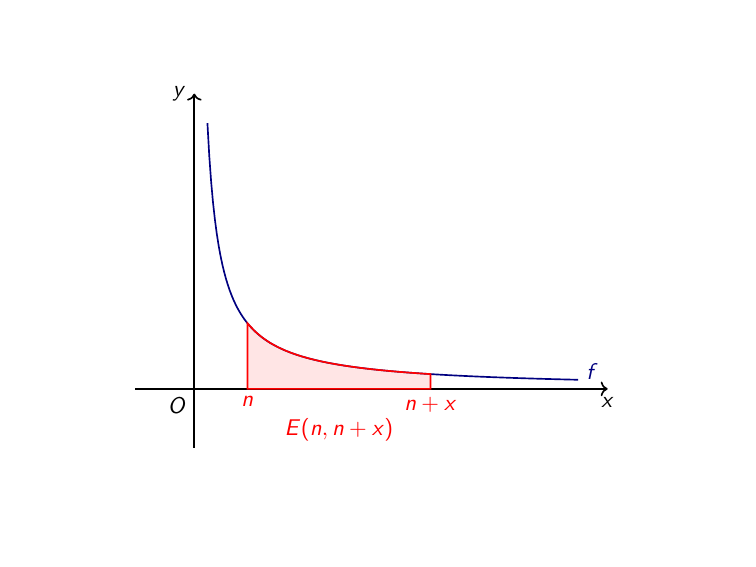
Το εν λόγω χωρίο.#
Στόχος μας είναι να υπολογίσουμε το εμβαδόν του παραπάνω χωρίου καθώς το \(n\) μεγαλώνει απεριόριστα (μάλιστα, αυτό που θέλουμε, είναι να δείξουμε ότι προσεγγίζει το \(x\) ). Εδώ θα μας φανεί χρήσιμο το ακόλουθο σχήμα:
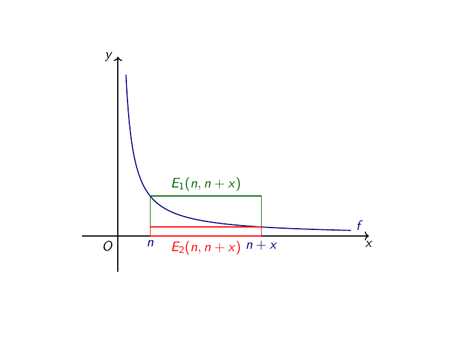
Τα δύο ορθογώνια.#
Το πράσινο χωρίο το έχουμε ξαναδεί προηγουμένως και γνωρίζουμε ότι το εμβαδόν του είναι ίσο με:
Για το κόκκινο χωρίο, εύκολα βρίσκουμε ότι το εμβαδόν του είναι ίσο με:
Από το παραπάνω σχήμα είναι επίσης προφανές ότι ισχύει η ακόλουθη σχέση για τα τρία εμβαδά που μας απασχολούν:
Επομένως, αντικαθιστώντας τα «ευρήματά» μας, έχουμε:
Πολλαπλασιάζοντας με \(n\) την παραπάνω σχέση παίρνουμε:
ή, με άλλα λόγια:
Έχουμε «εγκλωβίσει», λοιπόν, το \(L\left(\left(1+\dfrac{x}{n}\right)^n\right)\) ανάμεσα σε δύο ποσότητες που είναι, σε γενικές γραμμές, απλούστερες στον χειρισμό. Σε ό,τι αφορά το \(x\) , καθώς το \(n\) μεγαλώνει απεριόριστα, αυτό δεν αλλάζει, οπότε δε θα μας απασχολήσει. Σε ό,τι, όμως, έχει να κάνει με το \(\dfrac{n}{n+x}\cdot x\) , θα χρειαστεί λίγη παραπάνω σκέψη. Για την ακρίβεια, ας εξετάσουμε λίγο ενδελεχέστερα την παράσταση:
Καθώς το \(n\) παίρνει όλο και μεγαλύτερες τιμές, ο αριθμητής και ο παρονομαστής «μοιάζουν» όλο και περισότερο. Πράγματι, όσο το \(n\) μεγαλώνει, δεδομένου ότι το \(x\) παραμένει σταθερό, η σχετική απόσταση ανάμεσα στο \(n\) και το \(n+x\) μικραίνει. Ας το δούμε και με αριθμούς: αν \(x=20\) , τότε:
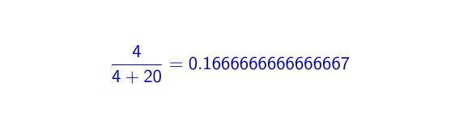
Ανεβαίνει!#
Επομένως, για μεγάλες τιμές του \(n\) , έχουμε:
οπότε:
Έτσι, καθώς το \(n\) παίρνει απεριόριστα μεγάλες τιμές:
οπότε, από την ανισότητα:
προκύπτει ότι:
για μεγάλες τιμές του \(n\) . Δεδομένου και ότι, για μεγάλες τιμές του \(n\) , έχουμε:
έπεται ότι:
οπότε \(L(e^x)=x\) .
Αν, τώρα, \(x<0\) , η απόδειξη είναι παρόμοια (απλά θα κουβαλάμε ένα «πλην» στο μεγαλύτερο τμήμα της απόδειξης, που δεν είναι κάτι τραγικό).
Κι όμως, σε ένα σημείο έχουμε κλέψει! Εμείς έχουμε δει ότι, καθώς το \(n\) παίρνει αυθαίρετα μεγάλες τιμές, η παράσταση:
προσεγγίζει το \(e^x\) , αλλά αυτό δε σημαίνει ότι απαραίτητα και η παράσταση:
προσεγγίζει το \(L(e^x)\) . Ας δούμε, ωστόσο το παρακάτω σχήμα - όπου το \(x\) παραμένει σταθερό και το \(n\) «μεγαλώνει»:
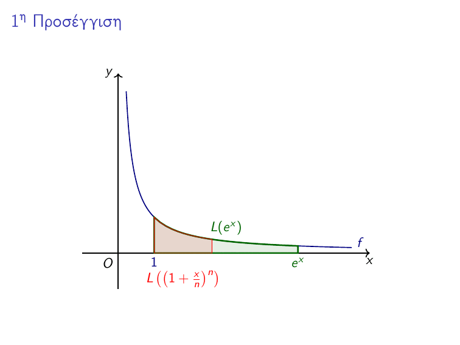
Φτάνει…#
Έτσι βλέπουμε ότι, πράγματι, καθώς το \(n\) μεγαλώνει απεριόριστα, το \(L\left(\left(1+\dfrac{x}{n}\right)^n\right)\) προσεγγίζει το \(L(e^x)\) . Άρα, όσα κάναμε, ευτυχώς, φαίνεται να έχουν νόημα.
Επομένως, έχουμε δείξει ότι για κάθε \(x\in\mathbb{R}\) ισχύει η εξής σχέση:
Θέτουμε τώρα, στη θέση του \(x\) το \(\ln x\) , οπότε έχουμε:
για κάθε \(x>0\) .
Επίλογος - Ιστορικό σημείωμα#
Όσα είδαμε εδώ δεν αποτελούν μία αυστηρή μαθηματική αιτιολόγηση για το γεγονός ότι \(L(x)=\ln x\) , αλλά, σε μεγαλύτερο βαθμό, μία «χαλαρή» αντιμετώπιση και προέκταση των συλλογισμών του Grégoire de Saint-Vincent, ο οποίος ήταν και από τους πρώτους που εντόπισε αυτήν την «λογαριθμική» συμπεριφορά των εμβαδών κάτω από μία υπερβολή. Ωστόσο, ο Grégoire de Saint-Vincent δεν είχε καταφέρει να ξεσκεπάσει τη λογαριθμική συνάρτηση πίσω από την \(L(x)\) , όπως κάναμε εμείς εδώ.
Για όσους έχουν κάποια επαφή με τον απειροστικό λογισμό (ή τα μαθηματικά της Γʹ Λυκείου), η σχέση \(L(x)=\ln x\) είναι, «μασκαρεμένη», η πολύ γνωστή σχέση:
Άλλωστε, και η μέθοδος που χρησιμοποιήσαμε για να προσεγγίσουμε τα εμβαδά κάτω από την υπερβολη θυμίζει έντονα αθροίσματα Riemann, αν και, ιστορικά, δεν είναι αυτός ο τρόπος με τον οποίο ο Grégoire de Saint-Vincent έκανε τους υπολογισμούς του.
Καλό απόγευμα!